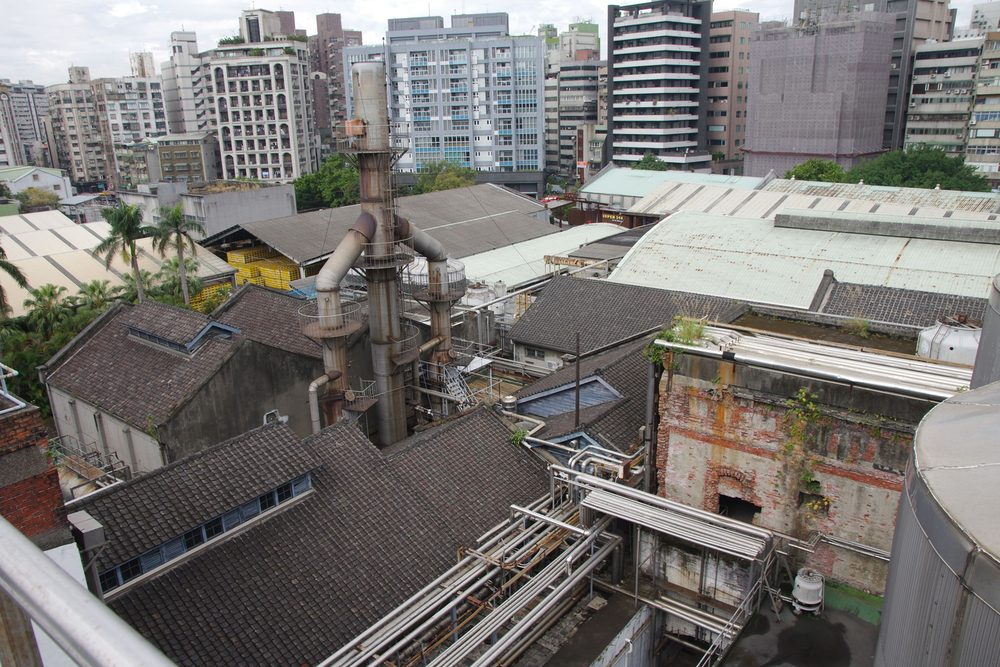
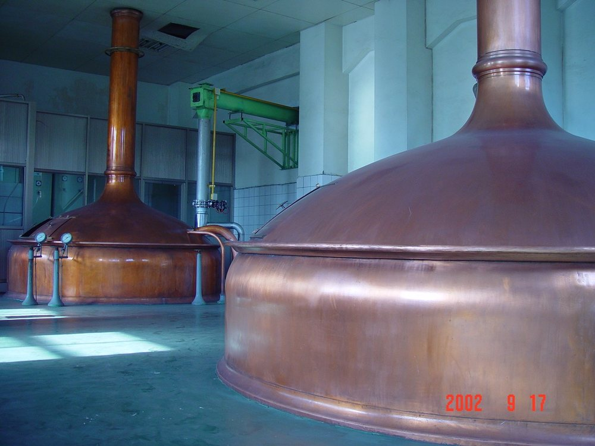
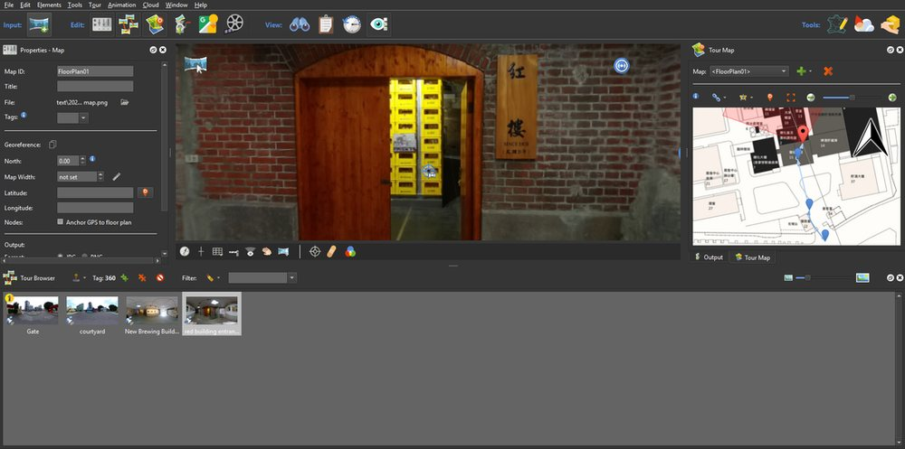
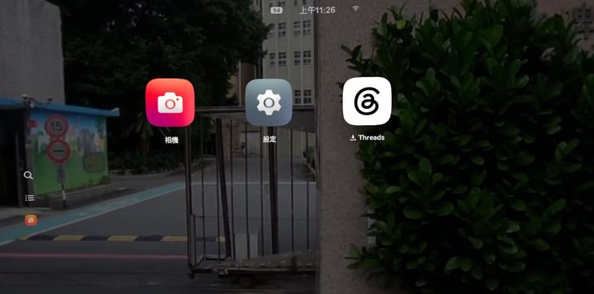

The site
Founded in 1919, the Taipei Brewery is Taiwan's first brewery and still produces beer today. It is the only brewery still producing in Taipei. Several of its buildings are designated municipal monuments or historic buildings. Its German-made copper brewing kettles are one of only ten such sets left in the world.


The project
At the time of our project, the Taipei Brewery's land use was under an urban planning review, which put its historical spaces and materials at risk. The lab approached the brewery to preserve them as a virtual tour.
A virtual record is not tied to the physical space or to time, and it can be shared digitally, which may draw more people to the site's history.
With the brewery's collaboration, we photographed every area we could reach, including parts closed to the public such as the fermentation room, and built a full version of more than 150 panoramas. After review, the team also made a 15-minute version. The tour combines 360 photography with explanations from brewery staff, other historical materials such as images and audio guides. The project was led by a graduate student, and it was the lab's first of its kind.
My part
Responsible for
- 360 photography on site
- Layout planning for the full version, ordering and naming the photos
- Tour build in Pano2VR, mainly the full version of more than 150 panoramas
- Software and hardware setup
Problems I solved
Uneven Light
Light differed sharply between indoors and outdoors, so I adjusted the lighting in every room, used flashlights in dark ones, and used long exposure in the beer storage corridor.
Seeing it early
After the shoot, the team wanted to see how the tour would look. I used Marzipano and built a local prototype. I ordered and named the photos from memory to establish the layout. The team then used the prototype to select which photos to keep and laid out the full tour in Pano2VR on it.
Panoramas from the final tour. Light differs sharply between the rooftop and the rooms inside.

